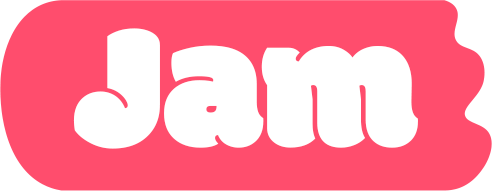
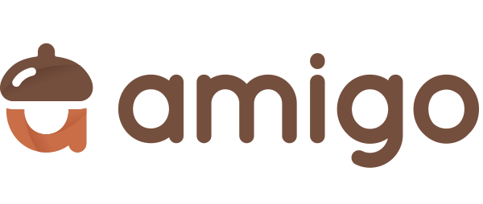

Spring Boot 웹 · Flutter 앱 실무양성 심화과정
그린컴퓨터아카데미
JAVA & SPRING BOOT
안녕하세요.
백엔드 개발자 박정훈입니다.
로그인과 결제, 커뮤니티 기능을 직접 구현하며 배웠습니다. 요청부터 응답까지의 흐름을 이해하고, 문제의 원인을 찾아 해결합니다.
프로젝트의 크기보다, 직접 해결한 문제에 집중합니다.
작가의 이야기가 책이 되도록.
독립·신인 작가와 독자를 연결하는 도서 출판 펀딩 플랫폼입니다.
MY ROLE일반·소셜 로그인, 결제·환불 API 연동
GitHub: https://github.com/junsoo186/jam
닉네임 중복 확인 및 paymentKey 기준 환불 요청 중복 등록 방지.

도서 출판 펀딩 플랫폼이야기를 나누고, 연결되는 공간.
게시글과 검색, 좋아요와 실시간 채팅을 제공하는 커뮤니티입니다.
MY ROLE게시글 CRUD, 검색·페이징, 좋아요·조회수
GitHub: https://github.com/GreenAcademyTeam4/Amigo
MyBatis 매핑 오류 수정 및 반복 조회에 따른 조회수 중복 증가 방지.

소셜 커뮤니티 플랫폼맡은 기능의 동작을 설명할 수 있는 개발자를 지향합니다.
답을 서두르기보다
질문을 정확하게.Java·Spring Boot 교육 과정과 팀 프로젝트를 거치며 쌓아온 저의 작업 방식입니다.
재현 조건을 만들고 로그와 요청·응답을 확인해 실패 지점을 좁힙니다. 수정한 뒤에는 의도한 결과가 나오는지 살펴봅니다.
문제의 원인과 해결 방법을 팀원에게 공유하고, 다시 참고할 수 있도록 기록합니다.
키오스크 UI 개선 연구를 통해 사용자 관점에서 접근성을 살펴보는 경험을 쌓았습니다.
어떤 기술을 썼는지, 어떻게 활용했는지.
객체지향 기반 기능 구현, 게시판과 인증 기능 개발.
OAuth2 소셜 로그인과 외부 결제 API 연동 경험.
SQL 작성과 데이터 조회, MyBatis 기반 데이터 처리.
Mapper 설정과 SQL 매핑 오류 분석 경험.
브랜치 관리와 Commit, Push/Pull을 통한 팀 협업.
REST API 요청 테스트와 응답 검증.
프로젝트 화면 구현 경험. React는 기본 컴포넌트 작성과 간단한 화면 구현 경험이 있습니다.
교육과 연구, 그리고 자격.
그린컴퓨터아카데미
그린컴퓨터아카데미
학사 졸업
동서대학교 · Mobile Sensor DataBase
한국정보통신진흥협회
한국산업인력공단
한국데이터산업진흥원
AWARD / 2023.07
노약자를 위한 키오스크 챗봇 연구
얼굴 이미지로 연령대를 추정해 50세 이상으로 판단되면 단순한 UI를 제공하도록 화면을 분기했습니다. 챗봇 안내 기능은 계획했으나 완성하지 못했습니다.
논문 정보 보기 ↗05 / LET'S TALK